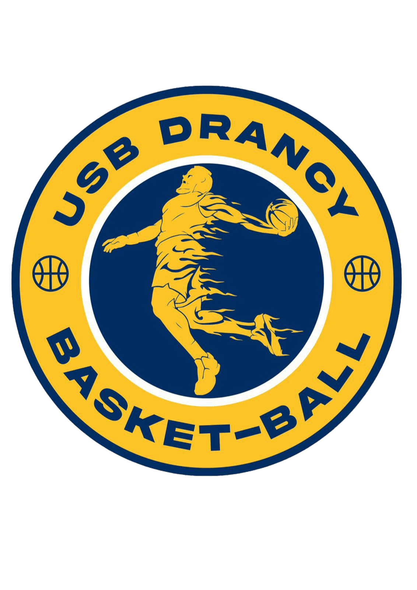

| Jour | 10H - 10H30 | 10H30 - 12H30 | 12H30 - 13H30 | 13H30 - 14H30 | 14H30 - 16H30 | 16H30 - 17H00 |
|---|---|---|---|---|---|---|
| LUNDI | Accueil et présentation | Théorie & Pratique : Les violations | PAUSE DÉJEUNER | Pratique : Mécanique de déplacement et transitions | Pratiques : Arbitrage | Débriefing de la journée |
| MARDI | Théorie & Pratique : La gestion des contacts et des fautes | Pratique : Gestuelle | Ateliers mécaniques : Placements et déplacements à deux | Débriefing de la journée | ||
| MERCREDI | Théorie : Les fautes spéciales (Antisportive et Technique) |
Théorie : Table de marque, remplacements, entre-deux et lancers-francs | Pratique : Arbitrage | Débriefing de la journée | ||
| JEUDI | Théorie : Gestion de match et communication | Pratique : Arbitrage | Pratique : Arbitrage | Bilans individuels : Retours personnalisés et progression | Clôture du stage | |